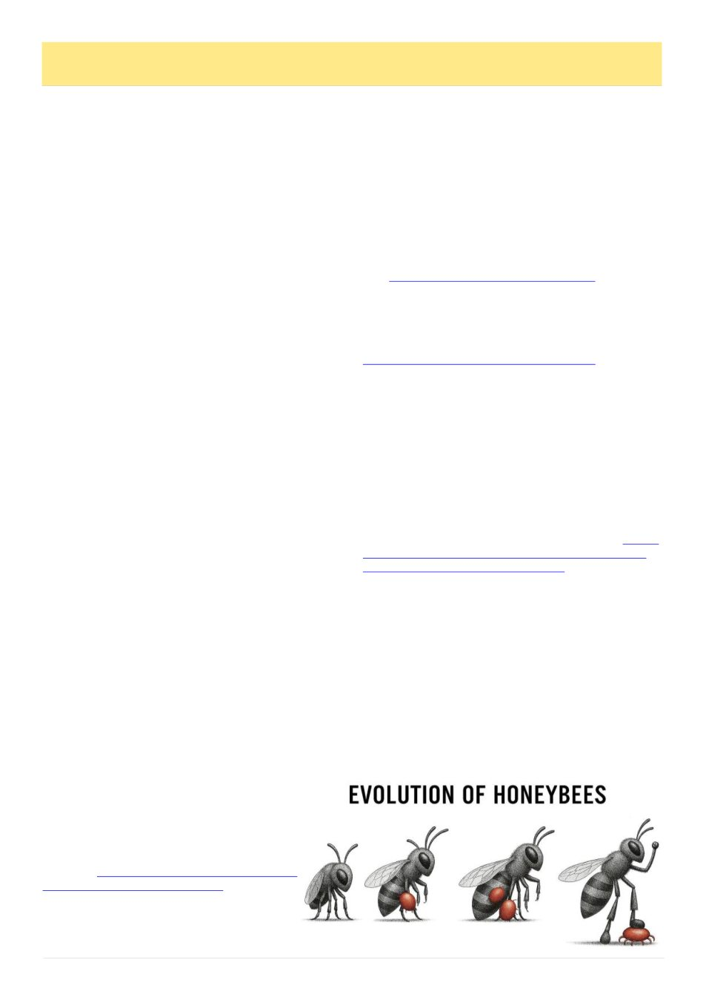

22
Australian Bee Journal
Varroa Resistance, cont’d
on shelves when the dust settles.
None of this means you must treat your hives at the
first sign of trouble. You‘ve got options. Integrated
Pest Management gives us plenty of tools: brood breaks,
heat treatments, screened bottom boards, drone brood
removal, and even mechanical grooming aids like ―bee
gyms.‖ We haven't even got to chemicals yet. Even our
Geelong winters may help. All these methods help re-
duce mite pressure, and if you can keep your numbers
down without chemicals, that‘s fantastic.
No beekeeper I know wants to add chemicals to their
hive. But when mite levels hit the threshold, sometimes
a treatment is the difference between a colony that sur-
vives and one that collapses. As multiple studies show,
varroa can drive colonies to collapse, but the disappear-
ance of susceptible colonies is not the same as the evo-
lution of resistance. Extinction removes bees; evolution
requires heritable traits that improve survival.
When you do need to treat, rotating modes of action
is essential to prevent resistance. We are living in a
country where our food system, our pollination capaci-
ty, and our beekeeping community depend on keeping
colonies alive through the varroaera.
As a club, our role is straightforward: we share good
information, support each other, and encourage sound,
legal beekeeping practices across our community. And
as members, it helps to remember that beekeeping has
never been a one-answer solution; ask ten beekeepers
and you‘ll still walk away with twelve opinions. Re-
specting those different approaches is part of what keeps
our club strong. At the end of the day, you‘re the one
standing in front of your hive, making the decisions that
are right for your bees.
It would be lovely to have a strain of varroa-resistant
honey bees, but it seems doing nothing and letting na-
ture take its course is not the direct route, and unfortu-
nately science, bee genetics and breeding isn‘t here yet
either. Maybe the best thing we can do is ensure there‘s
still a beekeeping industry on the other side of varroa.
Special thanks to Bianca Giggins at the Australian
Honey Bee Industry Council for her feedback on my
early draft, including updates to commercial operation
numbers and farm-gate sales figures. Bianca‘s insights
were also instrumental in identifying research on Aus-
tralia‘s feral honey bee populations and highlighting the
broader implications for national food security.
Thank you also to Jurg Schutz for his
thoughtful questions around citation accuracy
and for showing me how to use Microsoft Word
citations.
The Geelong Beekeepers Club has previous-
ly welcomed Dr Nadine Chapman and Dr Jody
Gerdts as guest speakers, and they‘ve recently
published an insightful piece on naturally varroa
-surviving honeybee populations. Their work
adds an important perspective to the national
conversation about how managed and unman-
aged colonies survive or fail in the presence of
varroa.
Nathan Whitford is the president of the Geelong
Beekeepers Club.
This article originally appeared in the Geelong Beekeep-
ers Club May 2026 newsletter.
References
1 Clarke, M., and Le Feuvre, D.. 2024. Size and Scope of
the Australian Honey Bee and Pollination Industry: An
Updated Snapshot for 2023. Wagga Wagga, NSW:
AgriFutures Australia.
2 Oldroyd, B. P., Thexton, E. G., Lawler, S. H., & Cro-
zier, R. H. 1997. ―Population Demography of Australian
Feral Bees (Apis mellifera).‖ Oecologia 111 (3): 381–
387. https://doi.org/10.1007/s004420050249
3 Cunningham, S. A., Crane, M. J., Evans, M. J., Hingee,
K. L., & Lindenmayer, D. B. 2022. ―Density of Invasive
Western Honey Bee (Apis mellifera) Colonies in Frag-
mented Woodlands Indicates Potential for Large Im-
pacts on Native Species.‖ Scientific Reports 12: 3603.
https://doi.org/10.1038/s41598-022-07635-0
4 Gross, C. L. 2001. ―The Effect of Introduced Honey-
bees on Native Bee Visitation and Fruit-Set in Dillwynia
juniperina (Fabaceae) in a Fragmented Ecosystem.‖
Biological Conservation 102 (1): 89–95. https://
doi.org/10.1016/S0006-3207(01)00088-X
5 Bartlett, L. J., et al., 2024. ―Faster-Growing Parasites
Threaten Host Populations via Patch-Level Population
Dynamics and Higher Virulence; A Case Study in Var-
roa Mites (Mesostigmata: Varroidae) and Honey Bees
(Hymenoptera: Apidae).‖ Journal of Insect Science 24
(3): 17. https://doi.org/10.1093/jisesa/ieae049
6 Columbia University. n.d. ―Varroa Mite (Varroa de-
structor).‖ Introduced Species Summary Project. https://
www.columbia.edu/itc/cerc/danoff-burg/invasion_bio/
inv_spp_summ/varroa_destructor.html [Accessed 2026
April 22nd]
7 Funes-Monzote, F. 2017. Farming Like We’re Here to
Stay. Burlington, VT: NOFA-VT. YouTube video, 2017
March 27th. [Accessed 2026 April 22nd].
8 Luis, A. R., Grindrod, I., Webb, G., Pérez Piñeiro, A.,
& Martin, S. J. 2022. ―Recapping and Mite Removal
Behaviour in Cuba: Home to the World‘s Largest Popu-
lation of Varroa-Resistant European Honeybees.‖ Scien-
tific Reports 12: 15597. https://doi.org/10.1038/s41598-
022-19871-5
9 Rosenkranz, P. 1999. ―Honey Bee (Apis mellifera L.)
Tolerance to Varroa jacobsoni Oud. in South America.‖
Apidologie
30:
159–172.
https://doi.org/10.1051/
apido:19990206
(Continued from page 21)